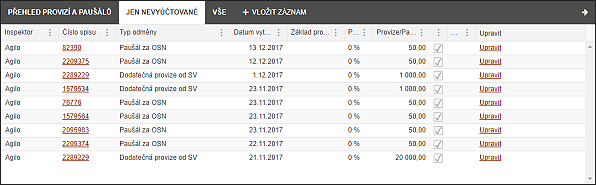
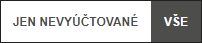
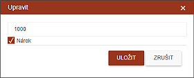
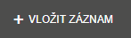
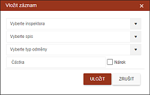
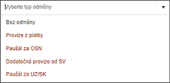

Přehled provizí a paušálů
Seznam obsahuje všechny provize a paušály za provedenou práci. Každý zápis má proklik na příslušný spis. Supervizor má přehled přes všechny inspektory, nadpisy polí umožní záznamy filtrovat a řadit.

Supervizor si může pomocí přednastavených filtrů zobrazit všechny zápisy nebo pouze ty nevyúčtované.

Zápis, který není vyfakturován je možné ještě editovat pomocí odkazu "Upravit". Supervizor u něj mění výši platby a zaškrtnutím položky "Nárok" může rozhodnout o nepřidělení či opakovaném přidělení platby inspektorovi.

Supervizor má pomocí tlačítka "+ Vložit záznam" možnost přidat do seznamu další položku.

Pro vytvoření položky musí vyplnit následující pole.

Částka může obsahovat i zápornou hodnotu. Typ odměny obsahuje následující možnosti.
